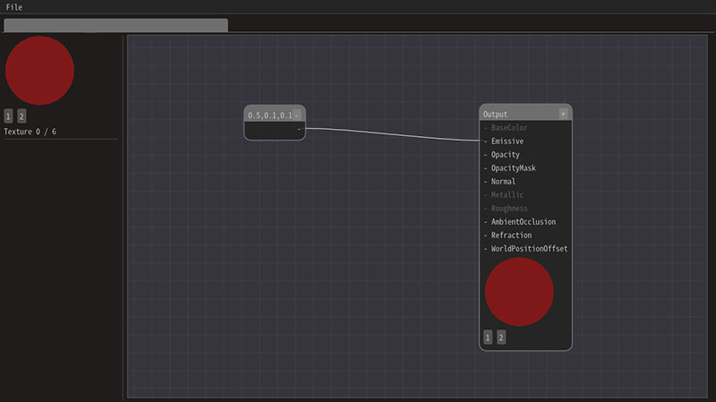

材质参考¶
概述¶
可以用材质编辑器为Effekseer制作材质。 材质用于设置粒子的绘制方式。
可通过Effekseer的基础渲染设置面板中的材质选项打开材质编辑器。
在材质编辑器中，可用节点编写运算流程。 运算的结果被渲染为粒子。


用鼠标左键拖拽可以连接节点的输入和输出。
可以通过右键打开的菜单新建节点。

最简单的设计包含两个节点：常量3和输出。
可以为常量3设置3个值。 在输出节点中，可以设置最终输出的值。
将输出节点的Emissive输入与常量3节点的输出相连。
接着，常量3的值就显示在粒子上了。
{kind=link}
细节操作方法¶
移动节点¶
左键选中节点后，可以按住左键拖拽节点。
{kind=link}
{kind=link}
参数的说明¶
可以为参数节点编辑概要和详细说明。 概要和详细说明会在Effekseer中显示。 建议编写一个清晰的说明。
快捷键¶
Ctrl(Command) + Z |
撤销 |
Ctrl(Command) + Y |
重做 |
Ctrl(Command) + C |
复制 |
Ctrl(Command) + V |
粘贴 |
Ctrl(Command) + S |
保存 |
输入值和输出值的类型¶
值有两种类型：数值类型和图像类型。 数值类型由1到4个数值元素组成。（译注：如同3维向量由3个浮点数组成） 在很多情况下，数值类型可以连接到元素数量不同的数值类型。 但图像只能连接到图像。
在这个文档中，根据元素数量不同，数值类型被称为数值1到数值4。
节点¶
材质编辑器中有多种节点。
输出¶
可以指定最终输出的值。
在输出节点中，可以设置光照的类型（着色模型）。
有Lit和Unlit两个选项。 如果选择Lit，它将受到光源的影响。 如果设置为Unlit，则直接显示输入值（译注：而不会受到外部光照的影响）。


BaseColor（基础颜色，数值3）¶
仅在选择了Lit时有效。输入材质的颜色。
Emissive（自发光，数值3）¶
输入材质的自发光颜色。 在选择了Unlit时，需要通过它来设置输入的颜色。
Opacity（不透明度，数值1）¶
输入不透明度。
OpacityMask（不透明遮罩，数值1）¶
输入遮罩。如果值小于或等于0，则完全不显示。 如果值大于0，则完全显示。
Roughness（粗糙度，数值1）¶
仅在选择了Lit时有效。输入表面的粗糙度。
Normal（法线，数值3）¶
仅在选择了Lit时有效。输入法线方向。
AmbientOcclusion（环境光遮蔽）¶
仅在选择了Lit时有效。输入值使光照变暗。 设置为0可使之完全变成黑色。
WorldPositionOffset（世界坐标偏移，数值3）¶
输入顶点的移动距离。 顶点的坐标被输入值移动。
Refraction（折射率，数值1）¶
输入折射率。如果折射率为1，则不被折射。 如果折射率不为1，则显示被折射的背景。 输入值需大于1。
深度衰减¶
当距离背景物体更近时，输出更小的值。 当距离大于FadeDistance时，输出1，距离为0时输出0。
注释¶
注释使条理更清晰，并不影响运算。
计算行为的细节¶
如果一个计算节点有输入值V1和V2，可以输入相同类型的值，也可以在V1或V2中输入数值1。 如果V1和V2类型相同，则输出值也是相同的类型。
如果V1是数值1，则输出值是V2的每个元素分别和V1进行计算。 如果V2是数值1，则输出值是V1的每个元素分别和V2进行计算。